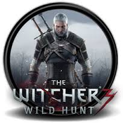
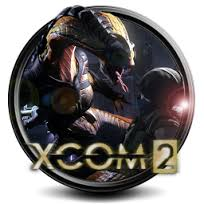
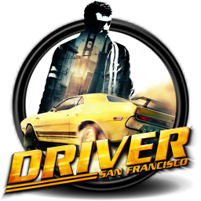
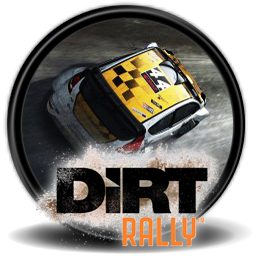

Top Action Games

Overwatch
Release date: May 24, 2016 ▪ Developer: Blizzard ▪ Our review (88%)
A great team shooter that emphasizes positioning, teamwork and tactics over agility and marksmanship,
(read more)
but still leaves room for players to grow in the latter department. There are still character tweaks to be made to ensure they’re continuously viable and
fun and all create interesting dynamics, but it’s the sort of game you could tweak forever. Overwatch can't replace Team Fortress 2 for us, but it’s certainly recaptured the experience of
getting a bunch of friends together for night-long sessions of the current top shooter. Competitive mode is out now, and we’re keen to earn some golden guns.

The Witcher 3:Blood and Wine
Release date: May 31, 2016 ▪ Developer: CD Projekt RED ▪ Our review (94%)
We're told that The Blood and Wine expansion for The Witcher 3: Wild Hunt marks the last great ride of Geralt of Rivia,
(read more)
so far as developer CD Projekt Red is concerned. I like to think there are signs that this isn't the case, as much of its storyline revolves around the
return of a friend long thought permanently lost. But even if it is, it's about as good as a sendoff as we could ask for. The sun may shine brighter here than it ever has for the Butcher of
Blaviken, and there's a undercurrent of hope that's been lost in the flood of despair in previous entries, but fittingly enough, above all this is a tale of the pain of letting go.

Doom
Release date: May 12, 2016 ▪ Developer: id Software ▪ Our review (88%)
Doom's reverence of a primordial aspect of FPS design—killing—borders on comical exaggeration with its
(read more)
fountains of demon blood and a main character who communicates by punching things. That fittingly fuels fast and fun combat indulging the nostalgia of
id's run-and-gun lineage without smothering its metal brutality. Doom's first major update since launch adds a Photo mode for screenshots and ups the classic feel with an optional center-aligned
weapon model.
Top Strategy Games

XCOM 2
Release date: Feb 4, 2016 ▪ Developer: Firaxis ▪ Our review (94%)
It has been 20 years since humanity lost the war against the aliens.
(read more)
A new order exists on Earth and the aliens have power over everything. They have brought in new technology and resources that promise a brighter future for the Earth, but they are concealing a
very evil agenda. The disavowed XCOM forces must rise from the shadows and fight back to reclaim their home planet or die trying. Players take control of an alien ship that has been converted
to their mobile headquarters. Combat enemy operations, guide your strike team and grow popular support as you inch your way to destroy the alien occupation.

Total War: Warhammer
Release date: May 24, 2016 ▪ Developer: Creative Assembly ▪ Our review (86%)
The first game in the Warhammer series to feature a fantasy world filled with monsters, warriors, and heroes.
(read more)
Warhammer is the 10th installment in the Total War series and players can control any of the four factions – the Empire, the Greenskins, the Dwarfs or the Vampire Counts. Warhammer brings back
the tried and tested elements of the previous games like city-building, unit-building and diplomacy settings. However, there are a huge number of animations and over 30 different types of
skeletons and body types added to the game.
Hearts Of Iron 4
Release date: June 6, 2016 ▪ Developer: Paradox ▪ Our review (88%)
“The AI may not always be sensible, and maybe combat doesn't always seem the historically accurate,”
(read more)
wrote Rob in our review, “but then, you might be playing a version of World War 2 where Italy broke away from Germany to create a new Roman Empire with Yugoslavia, and the Soviet Union was
plunged into civil war and Stalin was deposed by 1942.”
Top Racing Games

Shift 2
Release date: Feb 4, 2016 ▪ Developer: Firaxis ▪ Our review (94%)
Shift 2 might be the best compromise between realism and accessibility of any game on this list.
(read more)
It’s not just the ways the car handle — menacing, but capable — but the way it consistently thinks about what players need to perform at a high level.
Rather than lock your view gazing out over the hood, or ask you to spring for TrackIR to let you turn your head, Shift 2 has a dynamic view that subtly changes based on context.

Driver: San Francisco
Release date: May 24, 2016 ▪ Developer: Creative Assembly ▪ Our review (86%)
Every arcade racer should be as cool as this game. If Steve McQueen were digitized and turned into a videogame,
(read more)
he would be Driver: San Francisco. While Driver: SF features cars and influences from a variety of eras, it approaches everything with a 70’s style. It
loves American muscle, roaring engines, squealing tires, and the impossibly steep hills and twisting roads of San Francisco. It may have the single greatest soundtrack of any racing game, and
some of the best event variety.

Dirt Rally
Release date: June 6, 2016 ▪ Developer: Paradox ▪ Our review (88%)
Codemasters’ Dirt Rally has surpassed its predecessor, Dirt 3, and is arguably the best game Codemasters have made in years.
(read more)
With a far more authentic handling model, Dirt Rally does away with many of the arcadey touches that continue to persist in the core series. That also
makes it a proper rally game, in a way gamers haven't seen in a long while. It's not just that these races happen to be set on dirt tracks with loads and loads of sideways slidey driving, but
that you're actually taking part in the kind of endurance racing that rallying is all about. You’ll have to take care of your car through every race stage, which introduces an element of
strategy and resource management that's all too rare in sim-racing.